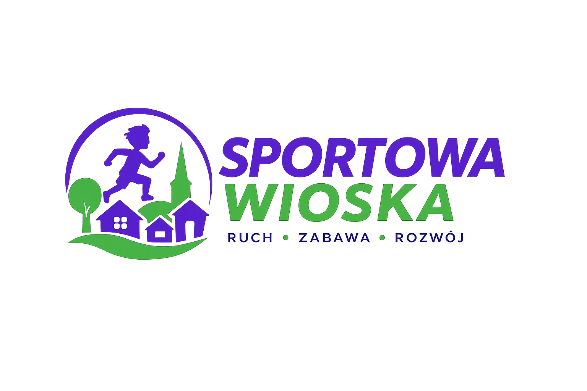
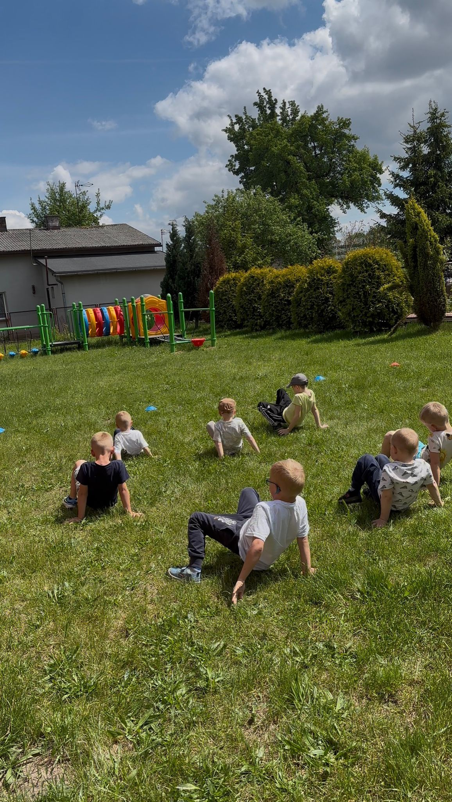
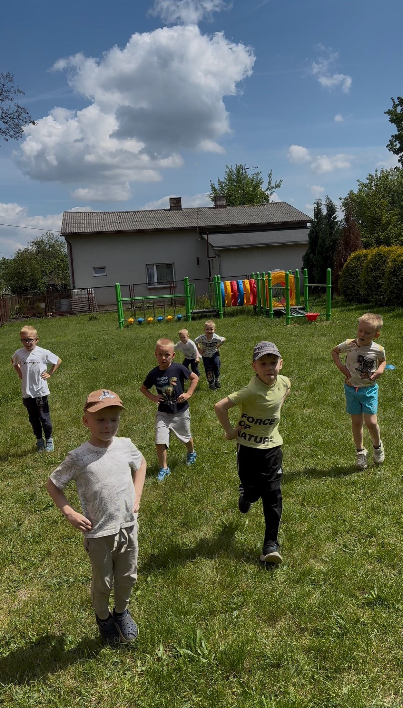
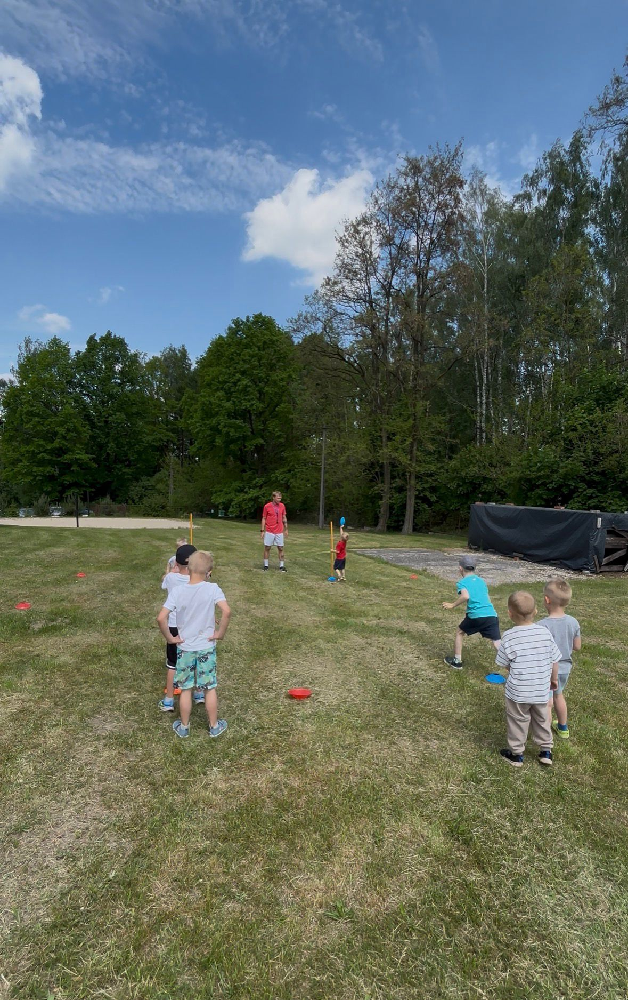
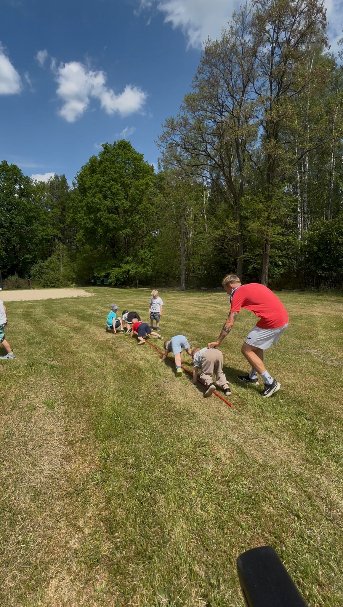
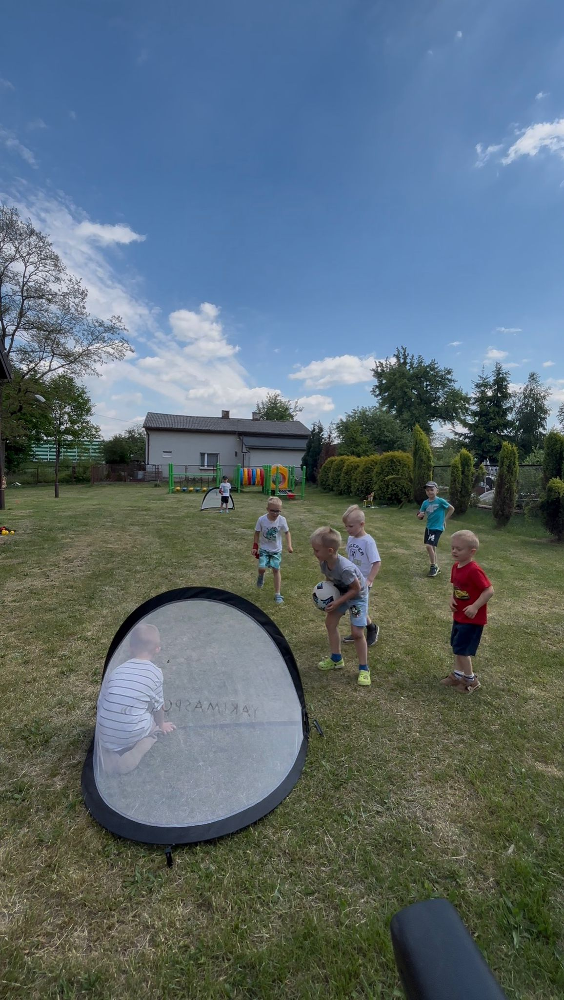
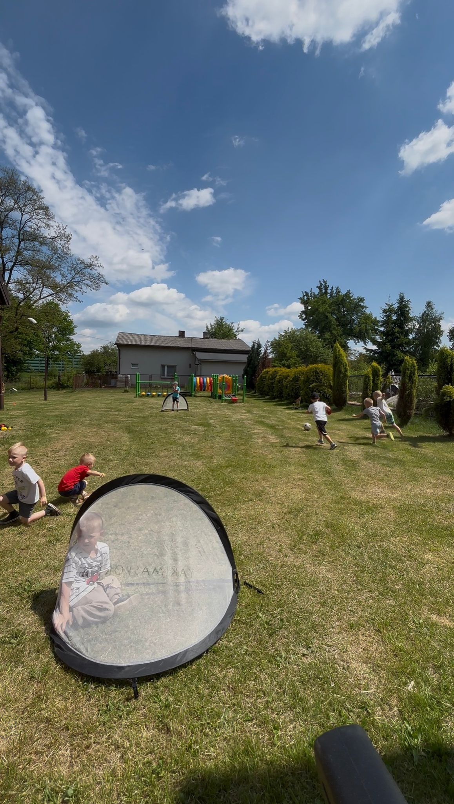

Trening motoryczny i ogólnorozwojowy dla dzieci. Ruch, zabawa, rozwój i pewność siebie — bliżej małych miejscowości.
Zapisz dziecko na zajęciaDzieci uczą się i rozwijają poprzez atrakcyjne gry, ćwiczenia oraz zadania ruchowe.
Poprawiamy szybkość, zwinność, koordynację, równowagę i sprawność ogólną.
Każde dziecko rozwija się we własnym tempie i czuje się częścią sportowej społeczności.
Zabawa, ruch i nauka podstaw sprawności.
Wszechstronny rozwój motoryczny i przygotowanie sportowe.






Student wychowania fizycznego • Trener UEFA C • Strength & Conditioning ASCA Level 1
Jestem studentem wychowania fizycznego na I roku studiów magisterskich, trenerem UEFA C oraz trenerem przygotowania motorycznego Strength & Conditioning ASCA Level 1.
Moim celem jest zaszczepienie w dzieciach pasji do sportu, którą kiedyś zaszczepiono we mnie. Chcę robić to profesjonalnie, dlatego stale się kształcę, rozwijam i zdobywam nowe doświadczenia.
Sportowa Wioska powstała z marzenia o stworzeniu społeczności, która wspólnie uprawia sport, rozwija się i czerpie radość z aktywności fizycznej.
Działam w mniejszych miejscowościach, ponieważ sam pochodzę z takiego środowiska i wiem, ile czasu rodzice muszą poświęcić, aby dowozić dzieci na treningi do dużego miasta.
Chcę to zmienić — aby profesjonalny trener przyjeżdżał bliżej dzieci, zamiast zmuszać rodziców do dalekich dojazdów.
📍 Zajęcia odbywają się w różnych szkołach i miejscowościach.
📞 889 355 024
📧 szy.cuber@gmail.com
Skontaktuj się, aby dowiedzieć się o najbliższej grupie treningowej.